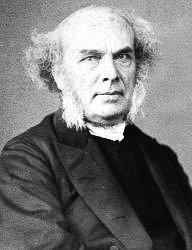

|
|
颂主新歌 |
|
1 Beloved, let us love: 2 Beloved, let us love: 3 Beloved, let us love: 4 Beloved, let us love: 5 Beloved, let us love: |
1.应当彼此相爱，因爱从神来，
|
|
https://www.mred365.cn/szxg/7346.html
|
|
|
|
|


https://youtu.be/0IRl3OOp_uY -
Beloved let Us Love (Tune - Song 46) 5 - Verses https://youtu.be/1HOg7Gb6drE - As on the night (Song 46) - Orlando Gibbons
https://youtu.be/x6oaYaZsqok https://youtu.be/5mUnomM768A
| Text: | Beloved, let us love: love is of God |
| Author: | Rev. Horatius Bonar (1808-1889) |
| Short Name: | Horatius Bonar |
| Full Name: | Bonar, Horatius, 1808-1889 |
| Birth Year: | 1808 |
| Death Year: | 1889 |
Horatius Bonar

was born at Edinburgh, in
1808. His education was obtained at the High School, and the University of
his native city. He was ordained to the ministry, in 1837, and since then
has been pastor at Kelso. In 1843, he joined the Free Church of Scotland.
His reputation as a religious writer was first gained on the publication of
the "Kelso Tracts," of which he was the author. He has also written many
other prose works, some of which have had a very large circulation. Nor is
he less favorably known as a religious poet and hymn-writer. The three
series of "Hymns of Faith and Hope," have passed through several editions.
--Annotations of the Hymnal, Charles Hutchins, M.A. 1872
Notes
Beloved, let us love , p. 162, i. 84. Through the kindness of the Rev. J. T. Wigner, editor of the Baptist Psalms & Hymns, 1858, and the Supplement thereto, 1880 (p. 1280, ii.), we learn that this hymn, with others, was sent him in manuscript and was included in the 1880 Supplement. It is not in Dr. Bonar's Communion Hymns, 1881. Mr. H. N. Bonar, in his Hymns by Horatius Bonar, &c, 1904, says in his Note, "The only piece printed in this selection which has not already appeared in an authorised collection of my father's hymns is 'Beloved, let us love: love is of God,’...but there is no doubt of its authorship, as I possess the original manuscript."
--John Julian, Dictionary of Hymnology, New Supplement (1907)
Tune Information
| Title: | SONG 46 |
| Composer: | Orlando Gibbons (1623) |
| Meter: | 10.10 |
| Incipit: | 13151 44432 27165 |
| Key: | F Major |
| Copyright: | Public Domain |
| Short Name: | Orlando Gibbons |
| Full Name: | Gibbons, Orlando, 1583-1625 |
| Birth Year: | 1583 |
| Death Year: | 1625 |
Orlando Gibbons (baptised 25 December 1583 – 5 June 1625)

was an English composer, virginalist and organist of the late Tudor and early Jacobean periods. He was a leading composer in the England of his day.
Gibbons was born in Cambridge and christened at Oxford the same year – thus appearing in Oxford church records.
Between 1596 and 1598 he sang in the Choir of King's College, Cambridge, where his brother Edward Gibbons (1568–1650), eldest of the four sons of William Gibbons, was master of the choristers. The second brother Ellis Gibbons (1573–1603) was also a promising composer, but died young. Orlando entered the university in 1598 and achieved the degree of Bachelor of Music in 1606. James I appointed him a Gentleman of the Chapel Royal, where he served as an organist from at least 1615 until his death. In 1623 he became senior organist at the Chapel Royal, with Thomas Tomkins as junior organist. He also held positions as keyboard player in the privy chamber of the court of Prince Charles (later King Charles I), and organist at Westminster Abbey. He died at age 41 in Canterbury of apoplexy, and a monument to him was built in Canterbury Cathedral. A suspicion immediately arose that Gibbons had died of the plague, which was rife in England that year. Two physicians who had been present at his death were ordered to make a report, and performed an autopsy, the account of which survives in The National Archives:
We whose names are here underwritten: having been called to give our counsels to Mr. Orlando Gibbons; in the time of his late and sudden sickness, which we found in the beginning lethargical, or a profound sleep; out of which, we could never recover him, neither by inward nor outward medicines, & then instantly he fell in most strong, & sharp convulsions; which did wring his mouth up to his ears, & his eyes were distorted, as though they would have been thrust out of his head & then suddenly he lost both speech, sight and hearing, & so grew apoplectical & lost the whole motion of every part of his body, & so died. Then here upon (his death being so sudden) rumours were cast out that he did die of the plague, whereupon we . . . caused his body to be searched by certain women that were sworn to deliver the truth, who did affirm that they never saw a fairer corpse. Yet notwithstanding we to give full satisfaction to all did cause the skull to be opened in our presence & we carefully viewed the body, which we found also to be very clean without any show or spot of any contagious matter. In the brain we found the whole & sole cause of his sickness namely a great admirable blackness & syderation in the outside of the brain. Within the brain (being opened) there did issue out abundance of water intermixed with blood & this we affirm to be the only cause of his sudden death.
His death was a shock to peers and the suddenness of his passing drew comment more for the haste of his burial – and of its location at Canterbury rather than the body being returned to London. His wife, Elizabeth, died a little over a year later, aged in her mid-30s, leaving Orlando's eldest brother, Edward, to care for the children left orphans by this event. Of these children only the eldest son, Christopher Gibbons, went on to become a musician.
One of the most versatile English composers of his time, Gibbons wrote a quantity of keyboard works, around thirty fantasias for viols, a number of madrigals (the best-known being "The Silver Swan"), and many popular verse anthems. His choral music is distinguished by his complete mastery of counterpoint, combined with his wonderful gift for melody. Perhaps his most well known verse anthem is This is the record of John, which sets an Advent text for solo countertenor or tenor, alternating with full chorus. The soloist is required to demonstrate considerable technical facility at points, and the work at once expresses the rhetorical force of the text, whilst never being demonstrative or bombastic. He also produced two major settings of Evensong, the Short Service and the Second Service. The former includes a beautifully expressive Nunc dimittis, while the latter is an extended composition, combining verse and full sections. Gibbons's full anthems include the expressive O Lord, in thy wrath, and the Ascension Day anthem O clap your hands together for eight voices.
He contributed six pieces to the first printed collection of keyboard music in England, Parthenia (to which he was by far the youngest of the three contributors), published in about 1611. Gibbons's surviving keyboard output comprises some 45 pieces. The polyphonic fantasia and dance forms are the best represented genres. Gibbons's writing exhibits full mastery of three- and four-part counterpoint. Most of the fantasias are complex, multisectional pieces, treating multiple subjects imitatively. Gibbons's approach to melody in both fantasias and dances features a capability for almost limitless development of simple musical ideas, on display in works such as Pavane in D minor and Lord Salisbury's Pavan and Galliard.
In the 20th century, the Canadian pianist Glenn Gould championed Gibbons's music, and named him as his favorite composer. Gould wrote of Gibbons's hymns and anthems: "ever since my teen-age years this music ... has moved me more deeply than any other sound experience I can think of." In one interview, Gould compared Gibbons to Beethoven and Webern:
...despite the requisite quota of scales and shakes in such half-hearted virtuoso vehicles as the Salisbury Galliard, one is never quite able to counter the impression of music of supreme beauty that lacks its ideal means of reproduction. Like Beethoven in his last quartets, or Webern at almost any time, Gibbons is an artist of such intractable commitment that, in the keyboard field, at least, his works work better in one's memory, or on paper, than they ever can through the intercession of a sounding-board.
To this day, Gibbons's obit service is commemorated every year in King's College Chapel, Cambridge.